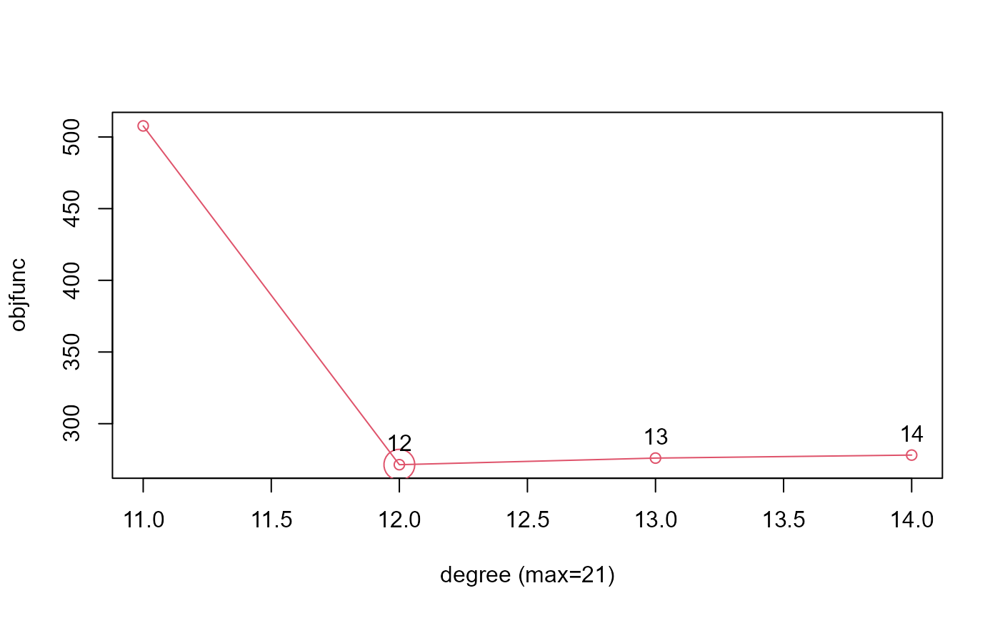

nmfkc.ar.degree.cv selects the optimal lag order for an autoregressive model
by applying cross-validation over candidate degrees.
This function accepts both standard matrices (Variables x Time) and ts objects
(Time x Variables). ts objects are automatically transposed internally.
Arguments
- Y
Observation matrix \(Y(P,N)\) or a
tsobject.- Q
Rank of the basis matrix. Must satisfy \(Q \le \min(P,N)\).
- degree
A vector of candidate lag orders to be evaluated.
- intercept
Logical. If TRUE (default), an intercept is added to the covariate matrix.
- plot
Logical. If TRUE (default), a plot of the objective function values is drawn.
- ...
Additional arguments passed to
nmfkc.cv.
Value
A list with components:
- degree
The lag order that minimizes the cross-validation objective function.
- degree.max
Maximum recommended lag order, computed as \(10 \log_{10}(N)\) following the
arfunction in the stats package.- objfunc
Objective function values for each candidate lag order.
Examples
# install.packages("remotes")
# remotes::install_github("ksatohds/nmfkc")
# Example using ts object directly
d <- AirPassengers
# Selection of degree (using ts object)
# Note: Y is automatically transposed if it is a ts object
nmfkc.ar.degree.cv(Y=d, Q=1, degree=11:14)
#> degree=11...
#> 0sec
#> degree=12...
#> 0.1sec
#> degree=13...
#> 0.1sec
#> degree=14...
#> 0.1sec

#> $degree
#> [1] 12
#>
#> $degree.max
#> [1] 21
#>
#> $objfunc
#> 11 12 13 14
#> 507.7053 271.4061 276.0141 278.1065
#>